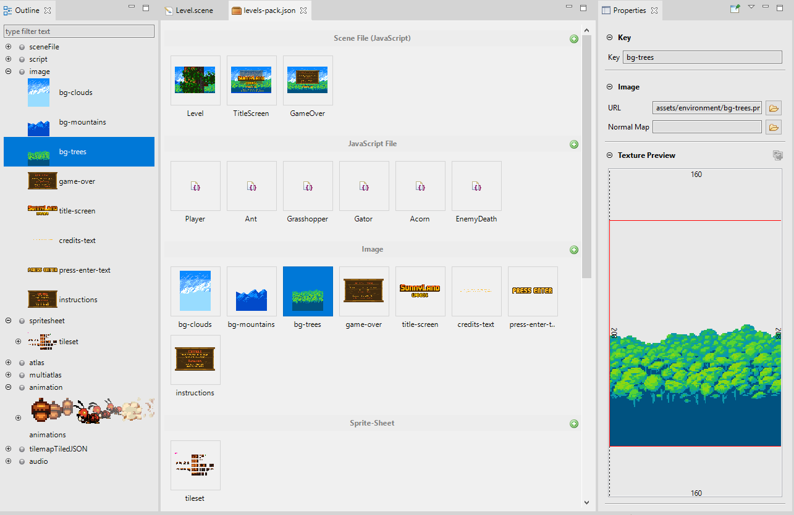
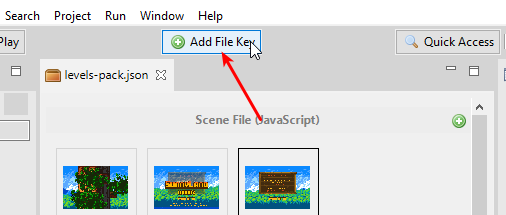
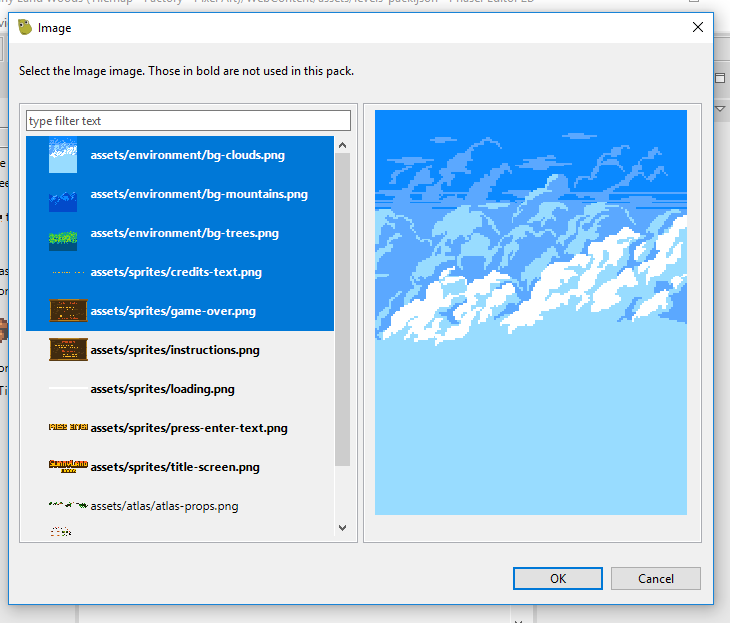

4 Asset Pack Editor¶
In a Phaser game you load the files using the methods of the Phaser.Loader.LoaderPlugin class. This is how you can load a sprite-sheet file:
this.load.spritesheet('bot', 'images/robot.png', { frameWidth: 32, frameHeight: 38 });
You pass a key ('bot') to identify the file in the game cache, the URL of the file ('images/robot.png') and a sprite-sheet configuration object, with other information like the frame size.
Or you can load the file by passing a single argument, a SpriteSheetFileConfig configuration object:
this.load.spritesheet({
key: 'bot',
url: 'images/robot.png',
frameConfig: {
frameWidth: 32,
frameHeight: 38
}
});
Every file type can be loaded using its configuration object, that is just a JSON object. Following this logic, Phaser has an especial type of files that contains the configurations of other files, it is the Asset Pack File.
The Asset Pack files are loaded this way:
this.load.pack("assets/pack.json");
Phaser Editor 2D provides an editor for the Asset Pack files, making it very easy to load the assets in your game. Instead of spending a precious amount of time writing the file configurations, with the Asset Pack Editor you can import the files with a visual tool and semi-automatic wizards.
4.1 The relevance of the Asset Pack File¶
The Asset Pack File is relevant for two main reasons:
- It is a Phaser built-in format. This means, you can create Asset Pack files with Phaser Editor 2D and use them in any Phaser project, inside or outside Phaser Editor 2D.
- In the same way Phaser uses keys to represent the real files, many Phaser Editor 2D tools use the files configured in the Asset Pack file as resource references. For example, a sprite object in the Scene Editor does not have a reference to a real image, else it uses a file key that, at rendering time, is used to find the real image under that key in any of the Asset Pack files of the project.
4.2 Create a new Asset Pack file¶
The default project created by the Project wizard contains a pack file, however, you may want to create other pack files with a different purpose.
To create a new Asset Pack file:
- Click on File → New → Asset Pack File.
- Or click on the main toolbar’s New button, and select Asset Pack File.
4.3 Adding file configurations¶
You can add new file configurations in two ways:
- By pressing the Add File Key in the main toolbar.
- By importing files from the Blocks view.
4.3.1 Adding files with the Add File Key button¶
These are the steps:
- Press the Add File Key button of the toolbar.

- It opens a dialog with all the file types, select the type of file you want to add.

- When you select a file type, it opens a dialog with a list of files selected following rules. Select the files you want to import.

- The files belong to the folder, or sub-folder, of the Pack File. It is not a restriction of the Pack Files, but we use it to simplify the process of import the files.
- The content type or extension of the files are compatible with the type selected. For example, if you select to add an Image, then only image files are shown.
- Files that are not used by any pack file in the project are highlighted (in bold).
- Change the properties of the file configurations in the Properties view.

The context menu also has the option Add File Key.
4.3.2 Importing files from the Blocks view¶
The Blocks view is a general-purpose view that connects with the active editor and provides the “blocks” needed to build the objects of the editor.
In the case of the Asset Pack Editor, the Blocks view shows the files that are candidates to be imported. A file is a candidate to be imported if:
- The file belongs to the folder, or sub-folder, of the Asset Pack file of the editor.
- The file is not present in any other pack file of the project.
- If the file has a content type or file name extension that we know is never loaded in games:
- TypeScript files (
.ts).- Texture Packer Editor files (
.atlas).- Scene Editor files (
.scene).- Other Asset Pack files.
The workflow is the following:
- Select the files to be imported in the Blocks view.
- Select one of the options listed in the Properties view to import the files.

- Edit the new file configurations in the Properties view.
This is a shorter workflow, you select the files you want to import and the editor guesses automatically what type of configuration needs to be created.
This process to guess the type of files provides three groups of options:
- Guess the type of the file from its content type. It is the case of atlas files, animations files, bitmap files, tilemap files, image and audio files, JavaScript files associated with scenes, audio-sprites files.
- Guess the type of the file just by its extension. For example,
.jsonand.xml. - The last option is not associated with any file type, it opens a dialog with all the file types and you should select the type you consider is the indicated from the selected files.
4.4 Importing JavaScript files¶
In the JavaScript development world, there are multiple ways to load the script files. The common is to load them using <script> tags in the index.html file. Some frameworks allow loading script files at any time, via code. Phaser provides different ways to load the scripts, each one with its purpose:
- this.load.script(…): it load and execute the provided script files.
- this.load.scripts(…): it loads a list of script files and execute them in the same order. Note in the
script()method the files may be executed in random order. - this.load.scenePlugin(…): it loads the script files and execute them, but assume them create new Phaser.Scenes.ScenePlugin instances.
- this.load.sceneFile(…): it loads the script files and execute them, but assume them create Phaser.Scene instances.
So the same Phaser framework can be used as a JavaScript packing/loading tool, and it has some clear advantages:
- You don’t need a third-party tool to control the scripts loading.
- You can report loading progress of the script files just like you do with the other assets.
- The scripts can be added to the Asset Pack files using the Phaser Editor 2D toolset.
By the way, when you add a JavaScript file to an Asset Pack file, and that script is associated with a Scene Editor file (.scene), then the Asset Pack Editor shows a screenshot of the scene, as file icon, for easy identification.

4.5 Organizing the Asset Pack files¶
You can place Asset Pack files in any folder inside the WebContent folder. However, we recommend placing these files in the folders dedicated to the game assets, for example: WebContent/assets/pack.json.
The common is that you need more than one Asset Pack file, at least, one for the preload screen and other for the rest of the game screens.
Sometimes, you need to use “helper” assets in the Scene Editor, to create custom objects. You can group all these assets with its own Asset Pack file in a separated folder. The “helper” assets are only for design purpose, as references in the Scene Editor, so you don’t need to load them in the game and you should exclude them from the distribution build.
This could be a structure of your project:
WebContent/
assets/
preload/
preload-pack.json
// preload assets ...
levels/
levels-pack.json
// level assets ...
helpers/
helper-pack.json
// helper assets ...
Remember the Asset Pack Editor searches for files inside the folder or sub-folder of the Asset Pack file, and you can make it more effective if the structure of the project is well organized.
And remember the gold rule: don’t add to your project (or filter them off) files that are not used by the game or any tool of the Phaser Editor 2D. For example, server-side node_modules or .git folders may pollute and slow down all the Phaser Editor 2D experience.
4.6 Outline view¶
The general purpose Outline view connects with the active Asset Pack Editor and shows all the file configurations grouped by its type. In case of complex files, like atlas or sprite-sheet files, it shows the frames too.

4.7 Properties view¶
The Properties view connects with the active Asset Pack Editor and shows property editors to change the file configurations. All these changes can be undone and redone.
In addition to property editors, in some cases, the Properties view shows a preview of the selected configuration. If the file was created by an editor inside the IDE (like the Animations Editor or the Texture Packer Editor) then it should provide a button to open the file in its editor.
This preview section is shown when you select a file key in other parts of the IDE, like the Assets view, the Animations Editor and the Project view.

4.8 Common operations¶
All operations like add, delete, modify the file configurations can be undone and redone. To delete file keys you can press the Delete key or use the context menu.
4.9 Asset Pack state of the project¶
As we mentioned at the beginning of this chapter, the files configured in the Asset Pack files are used by other tools in Phaser Editor 2D. For these reasons, the editor keeps an internal, in-memory model (or cache) of the file configurations, so it is not required to parse all the Asset Pack files each time a tool needs the information about the files.
This in-memory state is computed by project builders that run each time a file is modified, and it is possible that something (like out of synchronization resources) breaks the builders or that other builders (like thumbnail builders) that run asynchronous operations are not done at a certain moment. In these cases, you can clean the state of the project and run the builders again.
You can see the in-memory Asset Pack files state in the Assets view.